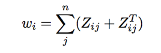
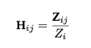
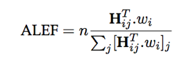
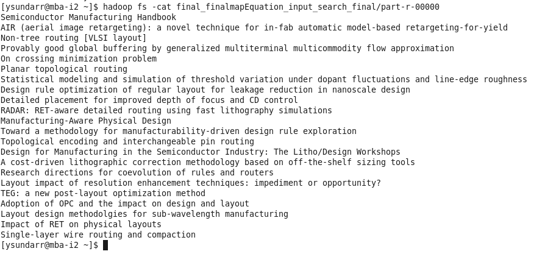

Article Recommendation Using Eigen Factor
(1) Assemble Citation Network
The first step requires assembling the citation graph for the large corpus. The first column is the citing paper ID and the column 2 is the cited paper id.Format: 1083734 197394###220708###387427
(2) Rank Node
Then we rank each article using “article level eigen factor algorithm” (ALEF). When page rank approaches are applied to acyclic citation graphs older papers are weighted excessively. ALEF is a modified version of page rank. The ALEF algorithm consists of five steps: a. The teleportation weight, wi for each node i is calculated by summing the in and out citations. 
Forming row stochastic matrix Hij:- The matrix Zij is then row normalized so that the sum of each row i equals, we call this row stochastic matrix,

Calculating Article Level Eigen Factor:- The ALEF scores are then calculated by multiplying wi by Hij and normalizing the scores by the number of papers, n, in the corpus

(3) Clustering the nodes hierarchically
We cluster the nodes using Map equation API(4) Recommendation Selection
Now we have eigen factor scores and the clusters of the nodes using Map equation. Whenever a user searches for a document, we determine the cluster in which the document is located. Then we rank those documents in that based on the eigen factor scores and display them to the user
